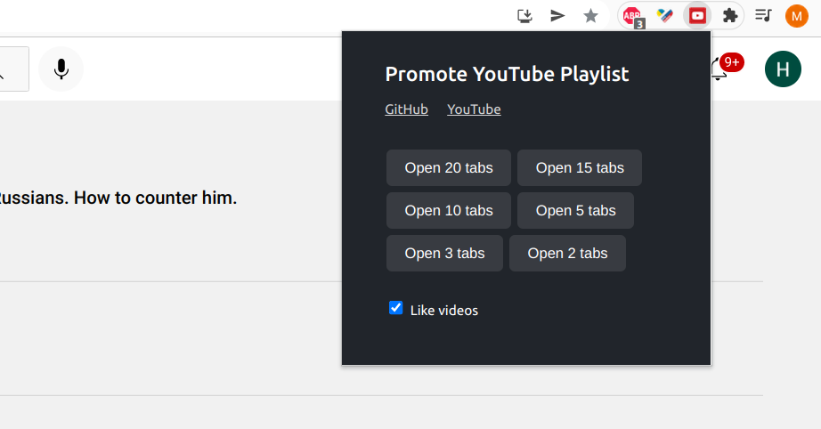

Inspired by and based on @detoxbrainwash video.
In the situation when most independent media are destroyed and social networks are blocked in Russia, YouTube becomes one of the few remaining platforms where people can share their opinion and get access to the independent sources of information.
According to @detoxbrainwash, one of the strategies used by V. Putin involves boosting propaganda materials on YouTube. As a result, the content advocating the war in Ukraine and other Putin's crimes dominates in YouTube recommendations in the Russian segment.
We are providing a Chrome Extension that can help to promote selected videos and YouTube channels, if used collectively.
The extension will open a playlist of your choice in multiple tabs and loop through videos with optimal interval. Supported browsers are Chrome, Edge and Opera.
The extension is published in Chrome Store, please see "Promote YouTube videos"
and follow the standard installation process.
You can also install the extension locally. Select browser to see the instructions:
- Download extension folder from GitHub - use this link.
- Unzip the archive in any location on your machine.
- Open Extentions manager in Chrome browser - copy this link to your browser chrome://extensions/
- Enable developer mode in the top right corner - see the screenshot.
- Click "Load unpacked" button in the top left corner to upload extension, select the extension folder.
- Extension is ready to use. To bookmark the extension, click "Extensions" button in the top right corner in the browser, then "Pin" icon next to extension name.
-
It is recommended to use YouTube AdBlock extension to skip ads.

- Download extension folder from GitHub - use this link.
- Unzip the archive in any location on your machine.
- Open Extentions manager in Edge browser - copy this link to your browser edge://extensions/
- Enable developer mode in the top right corner - see the screenshot.
- Click "Load unpacked" button in the top left corner to upload extension, select the extension folder.
- Extension is ready to use. To bookmark the extension, click "Extensions" button in the top right corner in the browser, then "Pin" icon next to extension name.
-
It is recommended to use YouTube AdBlock extension to skip ads.

A simplified "one click" version of the extension is also available - "YouTube - Support Independent Media". It has a list of YouTube channels and a playlist built in, so you only need to click "Open tabs" button to play videos.
Open YouTube playlist with videos you want to boost. Recommended:
Independent Russian Media.
Then click the extension button, and select the number of tab that works for you.

We suggest following these guidelines when creating a playlist. It is important to keep videos simple enough and of a decent quality, so it is easier to understand the content for an unprepared person.
- The most effective would be for everyone to use the same playlist approved by the community. Because our resources are limited.
- Choose videos from trusted and popular channels - DW, Radio Freedom, Max Katz, Michael Nacki, Navalny Live, Michael Khodorkovsky, Yulia Latynina, Popular Politics, Ilya Yashin, Ekaterina Shulman, Vladimir Milov. For the same reason - our resources are limited.
- Choose videos with neutral titles. Remember we are trying to communicate with people who are affected by propaganda.
- Choose videos simple enough so unprepared people can understand it.
- Choose videos of a decent quality, to increase the chance of the video being actually watched.
- Avoid content that is too graphical. It will have the opposite effect.
- Instead of uploading your own video, try to ask a YouTuber you trust to make a video on a related topic.
- For YouTubers - please add english subtitles so it is easier to share a playlist with non-russian community.
We welcome developers who are willing to support the project.
Discord (ru) https://discord.gg/s7M4QnDtys